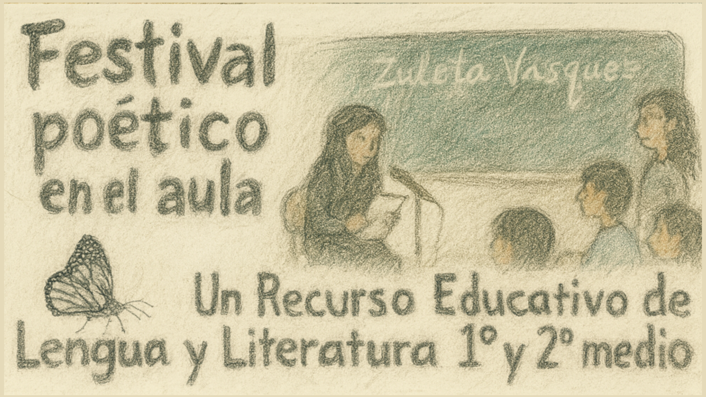
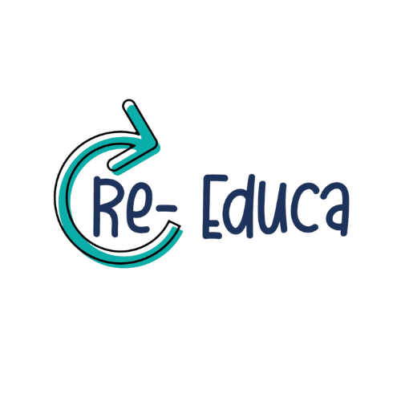

Descripción general del recurso
El siguiente Recurso Educativo Abierto (REA) es parte del proyecto Re-Educa y ha sido diseñado para ser implementado con estudiantes de primero o segundo medio en el marco de la unidad de poesía o género lírico. Su objetivo es acercar a los y las estudiantes a la obra de la poetisa antofagastina Zuleta Vásquez, como vía para explorar el yo lírico, el autorretrato poético y el conocimiento de sí mismos a través de la palabra.
Este REA puede ser utilizado, editado, adaptado y compartido libremente por cualquier docente. Su estructura ha sido creada en la plataforma eXeLearning, lo que facilita su modificación y reutilización según las necesidades de cada comunidad educativa.

La secuencia didáctica se organiza en tres etapas:
- En primer lugar, se propone un acercamiento libre y emocional a los poemas de Zuleta Vásquez, con el propósito de que los estudiantes establezcan un primer vínculo sensible con el lenguaje poético.
- Posteriormente, se invita a la escucha atenta de un podcast interactivo con la autora, que permite profundizar en su mirada sobre la poesía y su proceso creativo, abriendo el camino hacia la producción personal de los estudiantes.
- Finalmente, la experiencia culmina con la realización de un festival poético en el aula, instancia en la que los estudiantes comparten los autorretratos líricos y visuales que han creado durante el proceso.
A lo largo de estas actividades se busca desarrollar habilidades presentes en el currículum nacional, tales como la interpretación de textos poéticos, el reconocimiento de símbolos y metáforas, y la reflexión sobre la identidad y la construcción de una voz propia. Asimismo, se espera que esta experiencia promueva la sensibilidad estética, la creación colaborativa, el trabajo con las emociones y una relación más cercana con la poesía contemporánea.
En este contexto, Zuleta Vásquez se presenta como un referente vivo de la poesía regional. Rescatar las voces de mujeres de nuestra ciudad y visibilizar la creación literaria contemporánea forma parte también de una responsabilidad patrimonial. La educación tiene el potencial de vincularse profundamente con el arte, y este REA busca ser una invitación a transformar la poesía en una experiencia viva, significativa y profundamente humana dentro del aula.
Repositorio de REA Re-Educa
Re-Educa es un repositorio de Recursos Educativos Abiertos (REA) enfocado en Lengua y Literatura para enseñanza media, creado por docentes y para docentes, con el objetivo de aportar a una educación más equitativa, abierta y colaborativa. Forma parte del movimiento de Educación Abierta en Chile, adhiriendo a las recomendaciones de la UNESCO (2019) sobre el uso y difusión de REA. Todos los recursos están disponibles con licencias Creative Commons, lo que permite su uso libre, adaptación y distribución. Re-Educa promueve metodologías activas, el desarrollo de la competencia comunicativa y la construcción de una comunidad pedagógica que apuesta por una educación pública y de calidad.
